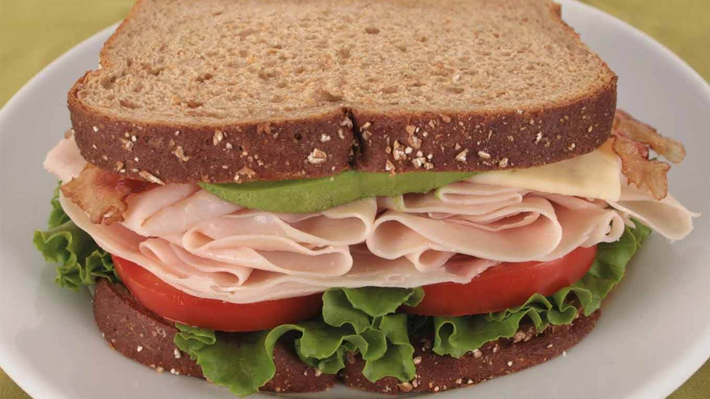

Turkey Sandwich
A to-go snack that can give you a nice boost

Ingredients
- Sliced turkey breast
- Sliced cheese of choice
- Fresh lettuce or arugula
- Fresh tomatoes
- 1/4 of an avocado
- Salt
- Pepper
- Balsamic vinaigrette
- Bread of choice
Instructions
- Take bread of choice and put the desired amount of sliced turkey on one half
- Place the sliced cheese on top of the turkey and put it in the over for 5 mins at 375
- Pull out of over and add greens and tomato on top of the cheese
- Put some balsamic vinaigrette on the other piece of bread
- Put sliced avocado on top of the vinaigrette and add salt and pepper
- Combine both halves and enjoy!